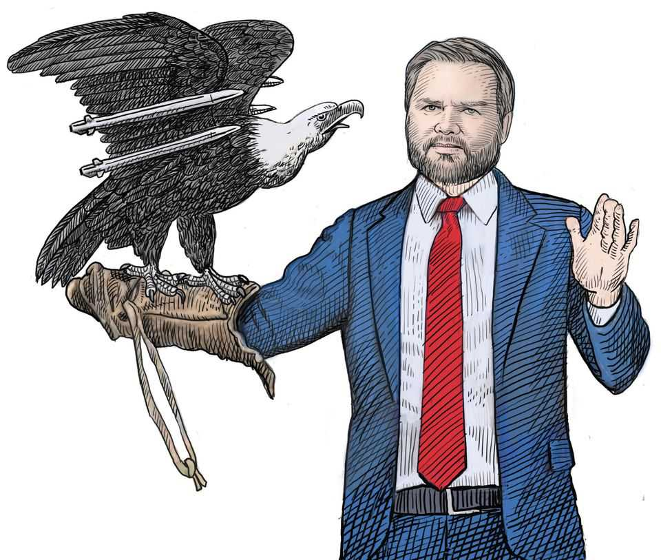

America’s Wrecking-ball revolution
The architects of the post-war order are tearing it down. Edward Carr asks what will rise from the rubble
July 2nd 2026

AS IT CELEBRATES the 250th anniversary of its independence, the United States is once again in a state of rebellion. This time the revolution is against the world America itself created.
Instead of George III and his parliament in far-off London, the enemies of this Wrecking-ball revolution are the global institutions, alliances and system of values that America built to keep liberty safe after the defeat of fascism in 1945. Many Republicans, as well as some on the left, believe these structures impose burdens that Americans should be no more willing to tolerate than they were the Stamp Act of 1765.
A year into his second term Donald Trump dumped 66 international bodies, including 31 UN agencies, like overtaxed crates of tea. Six months later the wrecking ball is still in full swing. Last month Mr Trump proposed a new round of sweeping tariffs as part of a campaign against multilateral trade. If he strikes Cuba, it will be the eighth time he has used military force since January 2025. He will not seek approval from Congress or the UN Security Council. Unlike previous presidents, he will not claim any rationale under international law.
Listen to the talk of secession. In his confirmation hearing before becoming secretary of state, Marco Rubio declared that “the post-war global order is not just obsolete; it is now a weapon being used against us.” Steve Bannon rejoices that the rules-based order has been tossed into “the dustbin of history”. Speaking for allies who feel attacked and betrayed, Ursula von der Leyen, president of the European Commission, laments that “the West as we know it no longer exists.”
You might think the billionaire son of a property developer would make an unlikely revolutionary. Mr Trump is uninterested in ideas. He has no ideals nor any higher purpose. The war in Iran demonstrates his lack of grand strategy.
But that vacuum is precisely what equips him to tear down the old order. An opportunist with an insatiable ego, he cares nothing for the institutions that were entrusted to him. Instead he wants to erect a monument to his own version of American greatness and put his name on it.
And the time is right. Every scheme for organising geopolitics eventually faces a shift in the balance of power or a crisis of legitimacy. This revolution hits one beset by both. Its rival China, Americans now believe, will never share the universal values America used to stand for. So what good is a system centred on them?
And if America, instead of investing in a peaceful world, extracts what it can from a violent one, why should others not do the same?
It is too early to say for sure where this will lead; revolutions follow logics of their own creation. But something precious lies broken. In his inaugural address, John F. Kennedy declared: “Let every nation know, whether it wishes us well or ill, that we shall pay any price, bear any burden, meet any hardship, support any friend, oppose any foe, in order to assure the survival and the success of liberty.” That vision is dead.
TO EVALUATE the Wrecking-ball revolution this essay looks at it in three contexts: that of America’s revolt in 1776 and the world it made; of the European revolutions of 1848 and the way they stalled; and of France’s of 1789 and its descent into chaos.
The American revolution was both a war of secession from Britain and the genesis of a new sort of society. In the formulation of David Ramsay, who chaired the Continental Congress in 1785-86, it was based on a new social contract which turned subjects into citizens. Instead of being compelled to submit to the will of the Crown, individuals possess within themselves universal rights by which they freely contract to become citizens of a sovereign republic. Even dukes and earls are not so exalted as citizens, Ramsay wrote, because they are just “creatures of kings”.
This posed a question. People in other countries were obviously not American citizens. But in the idealised conception of the framers, they were human beings imbued with the exact same natural rights as Americans. The United States should be to them the model of a new and better way of governing—a shining city on a hill. But how should it act when the broad interests of universal freedom and the narrow interests of the republic differ? As its power grew, the question gradually became consequential.
Woodrow Wilson’s belief that America’s mission was to spread God’s plan for mankind made him an epitome of the universalist approach. For democracy to be safe from the scourge of militarism and the cynicism of realpolitik, the president said in 1917, “Peace must be planted upon the tested foundations of political liberty.” In 1945 America made good on that, bringing freedom to the defeated Axis countries and seeking to build a defence against communism on that peaceful foundation and the prosperity it would bring.
Today’s revolutionaries have gone the other way. Here is Stephen Miller, the White House deputy chief of staff, speaking to Jake Tapper, a journalist, on CNN earlier this year: “We live in a world, in the real world, Jake, that is governed by strength, that is governed by force, that is governed by power: these are the iron laws of the world since the beginning of time.” Coming from Mr Trump’s chief ideologue, that sounds like royalist talk.
Or consider how J.D. Vance buried the shining city beneath blood-and-soil rhetoric when he accepted the vice-presidential nomination. He told the Republican convention about the five generations of his forebears lying in the Kentucky earth: “That’s not just an idea, my friends,” he proclaimed. “That’s not just a set of principles. Even though the ideas and the principles are great, that is a homeland. That is our homeland.”
Wilson’s Christian universalism has given way to Christian nationalism. The wrecking-ballistas think their predecessors’ quaint belief in free trade and enlightened self-interest has sapped the warrior spirit America needs to thrive in a nasty, violent world. They want less Adam Smith and more Carl Schmitt.
Odd Arne Westad, a Norwegian scholar, doubts that the pendulum is simply swinging between values and realpolitik, as it did after Wilson in the early 20th century and after Barack Obama in the early 21st. He believes that, for the first time in its history, America is thinking like a narrow, self-interested nation. “What you are seeing is an overthrow of the more basic universalist approach to American foreign policy,” he says. “And I don’t think that it’s just a blip.”
Michael Beckley of Tufts University expects America to become “more unilateralist, muscular and transactional”. Experts imagine it demanding more and providing less. American bases in Germany, say, will become German bases paid for by Germany—though America would still insist on the right to use them. In exchange for guarantees of help in times of war, America will require economic concessions during peace. It will impose “balanced” trade, enforced by the use of tariffs and quotas designed to favour its own economy. It will require its partner-vassals to sever their ties to China, block inward investment and ban their citizens from owning Chinese assets.
The simple reason why the wrecking-ball revolutionaries believe they will be able to impose all this is that America remains so powerful. And, because of AI, it is about to get more powerful still. Chris McGuire, who worked on technology policy in the National Security Council (NSC) under Joe Biden, says that even those immersed in the technology often fail to grasp the degree to which it is “happening so fast, and is so consequential for US global power”.
To succeed in AI requires the mobilisation of capital, infrastructure, computing, models and applications. America is impressively endowed with all five. And it can often exert serious influence on the deployment of those factors overseas. Recent decisions about new models from Anthropic and OpenAI show how the right to use cutting-edge models could one day depend on a nod from the Oval Office.
As well as controlling the models, America has perhaps 15 times as much computing power as Europe and much more planned. “I think the Europeans are completely screwed, to be honest,” says Mr McGuire. They will therefore be obliged to stay close to America. “Yes, the US is frustrating and annoying,” he says; “sometimes even a bad actor. But in the scheme of things, it’s a less bad actor than China or Russia by a lot…None of this is going to be based on legitimacy. It is going to be based on power.”
Some will ask what’s new. Doubters have always seen America’s rhetoric of liberty as a smokescreen designed to camouflage the imposition of hard power—rather as its talk of universal rights excluded slaves, its new social contract offered no citizenship to native Americans and its equalities excluded women.
But that misses the point. All countries are selfish. What is surprising about America is the degree to which it has pursued a universalist agenda alongside—even, sometimes, against—narrower ones. This broader interest led to errors of overreach. Perhaps the worst was to believe freedom could be spread to Iraq, and the Middle East thus stabilised, by force of arms in the face of world opinion. But the reason allies allowed themselves to become over-reliant on America was that they truly, and correctly, believed that America had an interest in the common good and that it understood that interest.

The wrecking-ball crew takes the opposite view. They are offering the world less right offset by more might. This, they imagine, will make America more dominant and prosperous than ever. It will also make it less popular among nations which used to admire it.
The more that future presidents extract money and favours with bullying, the more relations with the rest of the world will become resentful and hostile. Kori Schake, a scholar at the American Enterprise Institute, warns that “a predatory America [is] going to activate antibodies against American power.”
ON FEBRUARY 21ST 1848 the French government banned reformists from holding a banquet in honour of George Washington’s birthday. Protesters poured into the alleyways and boulevards of Paris, demanding change. Three days later King Louis-Philippe abdicated; he fled to England as a “Mr Smith”.
It was a year of poor harvests and economic doldrums in which liberal revolutions spread rapidly across continental Europe. Their fires were fanned by nationalism and the first sparks of socialism. Kings, princes and dukes buckled in the flames. In Austria and Hungary serfs won their freedom. Presses were spared the censor.
And then the revolutions sputtered out. Nationalism divided the revolutionaries; socialists split from liberals; newly minted governments staggered under the burden of popular expectations. The kings, princes and dukes clawed back power. Louis-Napoleon Bonaparte, elected president of France in December 1848, had himself proclaimed emperor four years later.
The Wrecking-ball revolution, too, could fail to follow through. Most Americans still cling to the idea that their country is the indispensable nation, even if, after $8trn of “forever wars”, many of them have no further interest in supplying the world’s police force.
Two-thirds of Americans tell the Pew Research Centre that the United States should weigh other countries’ interests in important foreign-policy decisions. For a long time they also thought that it did so. However, surveyed in late March, a month after the start of the war against Iran, 53% of them said that, in practice, foreign policy now ignores the interests of other countries—the first time a majority had that view since polling on the subject began in 2002. In the same questionnaire, 54% said the war in Ukraine matters to them personally, against 34% who said it does not.
In this, as in so much else, the country splits along party lines. Democrats are much more likely to think America ignores the interests of others than Republicans are, and are more worried about it. If Mr Trump’s MAGA faction loses control of the White House in 2028, the relentless aggression towards allies will subside. A new administration will be more likely to listen to America’s allies and talk about values, less likely to throw its weight about.
That leads many scholars to doubt the staying power of the narrow and nativist nationalism of Messrs Miller and Vance. To Mr Beckley, America is simply too diverse: “the idea of blood-and-soil nationalism and going pre-1776: I think it’s just not going to gain much political steam.” Stanford’s Francis Fukuyama agrees: “I’m just not convinced that Americans in general have given up on this liberal project that so many American presidents have supported.”
A greater reluctance to bully may be coupled with less scope for doing so. Brad Smith, the vice-chairman of Microsoft, points out that the gains from general-purpose technologies such as AI often favour those who are best at diffusing them through the economy, not those that invent them. At present America, number one in the world at AI invention, is only 21st at diffusion. Leads can slip away. “It’s not like this race ends,” says Mr Smith. “People act like you win the race, get the gold medal, and that’s worth something.”
Mr Smith also doubts that the government will choose to weaponise AI. His company does 45% of its business outside America. “We cannot be successful without those customers, and those customers are all globally interconnected themselves,” he says. For America to thrive, American businesses must thrive. For American businesses to thrive they must thrive in Europe, in Asia, in Latin America.
But if the wrecking ball fails to go all the way, that does not mean that the accumulated rubble gets rebuilt. America’s revolution has triggered reactions that no change in Washington can easily reverse.
European attitudes have hardened. Since Mr Trump’s threats in January to seize Greenland from Denmark, MAGA has become so disliked that even populist nationalists feel the need to take a stand. “Trump has been progressively losing his cards,” says Nathalie Tocci, an Italian scholar. The EU has accelerated trade agreements with Australia, India, Indonesia, Mercosur and Mexico. As Mr Trump’s influence over Ukraine has drained away, Europe’s has grown.
Germany’s defence spending has doubled since 2023. Its target is to reach 3.5% of GDP by 2029, three times its low in 2015. Europe needs to build military mass and systems which can both use it effectively and deploy it quickly. If Vladimir Putin mobilises Russian troops, says Camille Grand, a former French official who served in NATO, Europeans “have to be able to provide the cavalry”.
Asian democracies are also trying to build stronger regional alliances. “We need to fill the vacuum the US has been creating in our neighbourhood, particularly South-East Asia,” says Ishii Masafumi, a former Japanese diplomat. He favours an elaborate programme of engagement with countries across the region. The key will be making common cause with the big, populous and fast-growing ones. In GDP terms, Indonesia will be bigger than Japan in just 20 years.
The strongest call for vacuum-filling was the one issued by Mark Carney, Canada’s prime minister, at the World Economic Forum in Davos last January. He told other “middle powers” that there was no alternative: “If we’re not at the table, we’re on the menu.” And indeed, there is a theory in international relations which says that, although a hegemon is needed to build an order, lesser powers can sustain one.
The argument is that order produces real economic benefits by co-ordinating the provision of public goods: setting standards in areas such as air-traffic control; enforcing agreements over things like freedom of navigation; developing the confidence that the world will run smoothly. That gives other countries good reason to step in when America abandons its sponsorship of institutions they value, as they did to salvage a Pacific trade deal now known as the CPTPP.
Unfortunately such hegemon-free arrangements tend to be unstable. “At some point somebody’s going to decide they want to break out of it, or they want to break the rules, or the rules don’t apply to them,” says Dr Fukuyama. Without someone to force renegades back in, the system breaks down. Especially if the erstwhile enforcer is on the outside singing the praises of the renegade life.
Nor are all middle powers necessarily keen on the idea. Team Carney can expect little help within in its own hemisphere. Latin America is being Trumpified one country at a time. The right has won all seven of the presidential elections there since the beginning of 2025. Resisting America’s agenda is not on the cards.
Across the Atlantic many in the EU have Carneyite sympathies. But their own institutions make painfully clear how hard it is for a collection of powers to co-ordinate. Its 27 members have developed complex procedures in a bid to make collective government efficient. Even after decades of institution-building, they struggle to work fast. Dr Tocci argues that methods built for peace are ill-suited to times of conflict.
Asian countries, for their part, tend to see the middle-power idea as a dangerous Western illusion. They do not believe that they can withstand China without American help. “There is no possibility of countering China without the United States,” says John Lee, a former adviser to Australia’s foreign minister. “Ultimately, Asian allies will do and give what it takes to preserve that American balance.”
That said, if America seeks some sort of reform, it may be able to work with the smaller powers to hold the system together. Some of those powers understand that a modified American primacy would give them a weight and agency that other arrangements do not. Therefore they may reduce the scale of what they expect from America, making a new, less partisan foreign policy there more plausible. Meanwhile their demands for dependability might help those forging that American policy to further their goals at home. “The US is going to have to earn its way back into institutions and practices it has abandoned,” says Dr Schake. “We’re going to have to prove ourselves trustworthy and others are going to tell us when we’re failing.”
Look back again, though, to 1848. The revolutions foundered; but Europe never restored the conservative order, based on the divine right of monarchs, that Klemens von Metternich had established at the Congress of Vienna. Instead, Otto von Bismarck sought stability from the manipulation of power. In the same way, if the wrecking ball is stayed from completing its destructive work, a new equilibrium could see America still dominant. But the ties would be shallower; if wariness limited commitment, they would be less useful.
WHEN LOUIS XVI locked the National Assembly out of its meeting rooms in 1789 a Parisian doctor with an interest in the reform of capital punishment proposed that they simply move their deliberations to a nearby tennis court. There they swore that they would not stop those deliberations until the job of providing France with a new constitution had been completed. It was all very reasonable.
It took just four years for the revolution to descend into the Terror, during which the Committee of Public Safety beheaded almost 17,000 people using the contraption first proposed by that very reasonable doctor, Joseph-Ignace Guillotin.
The instigators of the Wrecking-ball revolution may not wish it to descend into anarchy and violence, any more than Guillotin intended his commitment to more humane execution to lead to mass murder. But Mr Trump has set in motion a juggernaut neither he nor any other world leader will be able to control. His contemptuous treatment of allies and principles—and his indulgence of dictators and rule-breaking—has greased its axles. An unhappy, anarchic and violent end is all too possible.
Many countries are resentful of the order now passing, some with good reason. China and Russia, like the wrecking-ballistas, are actively working against it. Russia has become a pariah that invades, interferes, sabotages, murders and then protects itself by hiding behind the rules it has just trampled. Its hypocrisy is deeply corrosive. China is more deliberate, because it wants to erode America’s control without causing so much mayhem that it is obliged to help clear things up. Its threats to withhold exports of rare earths, which it dominates, are putting the world trading system under intolerable strain. It is setting up a shadow governance system of development banks and political forums which cannot replace the old order, but can help with its fragmentation.
The chaos will spread as the forces that once drew the world together increasingly pull it apart. Eswar Prasad of Cornell University used to think that the overall economic and security benefits created by globalisation would offset leaders’ reluctance to make concessions. He now fears that globalisation has become tainted. “Not only are we not getting those benefits,” he says, “but that stabilising force versus the zero-sum game of politics is gone.” The recent book in which he makes his case is called “The Doom Loop”.

Dr Prasad observes that populist leaders blame trade for destroying jobs, whereas technology usually plays a much bigger part. Technologies such as AI and crypto are empowering small rogue states and domestic troublemakers. Dollar dependence stabilises economies in the short run, but exposes them to rich-world sanctions and punishing capital flight in a crisis. He worries that, if ever economies need emergency dollar liquidity, Mr Trump may seek to exploit his leverage to extract concessions.
As norms collapse, countries will produce innovations under stress, seizing on opportunities that would once have been too risky. China’s move on rare earths is one such example. Iran’s grabbing control of the Strait of Hormuz, and its attacks on its neighbours’ energy infrastructure, are another. Although denying ships safe passage is illegal, the Islamic Republic will not give up its new prize willingly. For the foreseeable future the threat of a renewed blockade will hang over the strait like a loitering drone.
As Mr Trump has monetised his alliances, so Iran will seek to pay for its reconstruction through transit fees. Other chokepoints, geographical or metaphorical, will also be up for exploitation. Who will control the Panama Canal, the Northern Sea Route, Bab al-Mandab or the Strait of Malacca? Will the Netherlands exert leverage thanks to its lead in lithography or Taiwan through its world-beating wafer fabs? What of the Democratic Republic of Congo’s minerals—or Brazil’s? If the world is zero-sum, nothing is to be gained from being a good international citizen, only from taking out what you can.
Suspecting that America will no longer make a fuss, and that the UN’s bark has lost any residual bite, leaders will dust off plans to settle scores with their neighbours. China has disputed territorial claims on reefs and shoals and rocky outcrops against just about every maritime state in Asia. Cambodia and Thailand repeatedly snipe in the Dangrek Mountains. Turkey occupies parts of northern Syria. Israel has created buffer zones all around its frontiers. Many of Africa’s ruled-line borders, drafted in distant capitals by imperial administrators, defy local logic. Leaders who hold back out of respect for the rules will not get any thanks. Instead they may miss their chance.
A breaking international system will reward predators, just as a successful one used to suppress them. By helping Mr Putin fight Ukraine Kim Jong Un, North Korea’s pariah president, has clawed back influence with Russia and China.
Everywhere, a paranoid scramble for security will set off arms races. When Iran struck its neighbours in the Gulf, America was unable to protect them fully. They will now have to find ways either to defend themselves, to deter Iran, or (more likely) both. And so Iran, feeling threatened itself, will invest in yet more weapons—and the cycle will repeat itself.
Such security dilemmas are already infecting nuclear policy. The era of nuclear-arms control is over; the New START treaty between America and Russia lapsed in February, leaving both sides free to move weapons from storage to active duty. Russia has issued nuclear threats as part of its war against Ukraine, a dangerous blurring between nuclear and non-nuclear warfare. China is massively expanding its arsenal, and standing in the way of arms talks.
The prospects for proliferation look just as worrying. In 1963 President Kennedy said he was “haunted” by the dread that in the 1970s, 15, 20 or 25 countries could get nuclear weapons. More than 60 years later, the ranks of the nuclear powers have merely grown from four to nine; and if five have joined the ranks permanently, four others gave up their weapons. Some of this was down to targeted counter-proliferation efforts; some was down to the belief that peace could be maintained without them, sometimes under an explicit nuclear umbrella, sometimes not. With its security guaranteed by the international rules-based order, what need had the Ukraine of 1994 for nukes it inherited from the Soviet Union?
The Iran war has thrown into doubt the ability of even an unfettered America to stop proliferation by force. The Wrecking-ball revolution is making countries devoid of previous nuclear ambitions newly interested in peace through that hideous strength. If Mr Trump sneers at America’s allies—even the closest—why would he go nuclear on behalf of any of them?
Acquiring nuclear weapons takes time and money. Paul van Hooft, head of the deterrence initiative at RAND Europe, a think-tank, says countries may soon be able to save both with conventional alternatives. By the early 2030s those with the know-how and willingness to spend could have large numbers of conventional weapons able to make precision strikes deep inside enemy territory. And within Europe the two existing nuclear deterrents might be shared more explicitly.
Countries which nevertheless seek a bomb of their own know that there is no more dangerous time than that between their schemes being detected and their deterrent being in place. Minimising that window means having detailed design work done in advance and stocks of civilian nuclear material ready for quick repurposing. Brad Roberts, a former Pentagon official, points out that East Asian nuclear plants have a surprising number of supercomputers. “They have legitimate functions, I’m sure,” he insists. “But you have to wonder what other functions they’ve had.”
Dr van Hooft warns that if a number of states sprint for a bomb, things get hairy—all the more so if they plan to use existing deep-strike systems to deliver them. “I think the likelihood of war goes up,” he says, “and the likelihood of one of those wars involving a nuclear-armed state, involving the use of a nuclear weapon or two, those all go up.” He stresses that this does not mean a planet-destroying conflagration. But even if the fallout from the first nuclear weapons fired in anger since 1945 were small in absolute terms, it would be as symbolically potent as the layer of iridium-laced clay which caps off the age of the dinosaurs.
“It’s a pretty dark picture,” says Joel Rosenthal, president of the Carnegie Council for Ethics in International Affairs, another think-tank. “I don’t really see a way out of it. I just see mitigation, not prevention.”
AMERICA’S NEXT leaders will discover that securing a new order is a lot harder than demolishing the old one. Under the careless hand of Mr Trump, the Wrecking-ball revolution got under way without much heed to what would come next—a bit like the demolition of the East Wing of the White House. He will not, in the end, be the man to determine what, if anything, should take its place.
Despite the clear evidence that it is happening, it is still in some ways hard to believe that America set about the demolition at all. Whatever Mr Trump, his lieutenants and their apologists say, the system their country created after the second world war brought it vast benefits over the best part of a century—permanent mechanisms with which to exert influence, stability on its own terms, the economic gains which come from being the anchor of the financial system, open markets and the conditions for its companies to thrive in them. And absence of great-power war.

For Americans to knock this down, therefore, may seem a morbid symptom of decline—the external face of the decay of its values and politics at home, a predatory hegemony begot of a failing democracy. The alternative view, though, is that a new order will emerge in which America continues to lead, and that this revolution will instead come to stand for the country’s extraordinary dynamism and powers of renewal.
It would be a remarkable reversal. New orders usually emerge from conquest and conflagration. It took the horrors of the Thirty Years War, one of the most devastating conflicts in Europe’s history, to bring about in 1648 the peace of Westphalia—and with it the concept of the sovereign state, the fundamental notion on which geopolitics is founded. There would have been no Concert of Europe for Metternich to conduct without the Napoleonic wars, no nations to unite in 1945 without the defeat of Hitler. America’s leaders are trying to impose a new—if still Westphalian—order even as their own politics is convulsed by populism, a disruptive new technology promises to upend every part of modern life and a risen China is itching to exert control over East Asia and influence over everything.
Instinct says that if such a thing is to be done successfully it must be undertaken slowly. America and China, on whose relationship so much else rests, need to feel their way towards a co-existence that both can tolerate, one which is based on a shared understanding of their relative strengths.
There is some comfort, in this respect, to be taken from Zhao Tong, who works at the Carnegie Endowment for International Peace. He believes that China’s leaders are not in a rush. They have been so preoccupied with weakening America’s leadership that they have given less thought to the shape of the order that would follow. They wish to continue accumulating power, and that will take time—which might let the two sides gradually, through probing and diplomacy, arrive at an accommodation.
But for a balance of power to bring a new order it must do more than satisfy the two main actors. It must also bring stability to others or be flexible enough to encompass change. It must offer something of what Britain brought to 19th-century Europe through policies which sought to preserve the status quo by ensuring no country could dominate. Wars still happened, but their goal, as Henry Kissinger put it, was equilibrium, not total conquest.
Unfortunately, as Dr Fukuyama points out, using small wars to recalibrate the balance of power in a world studded with nuclear weapons will court catastrophe. How such a system could function is a mystery. “I’m scared,” he admits. Dr Westad sees a growing temptation for ambitious, ruthless or reckless leaders to act fast so as to get what they want while they still can. “That’s seriously why I am worried,” he says.
Like those of 1776, 1789 and 1848, the Wrecking-ball revolution has already taken on a life of its own. The constant, overwhelming fear will be that the forces which have broken free will not stop until the wreckage is complete.■